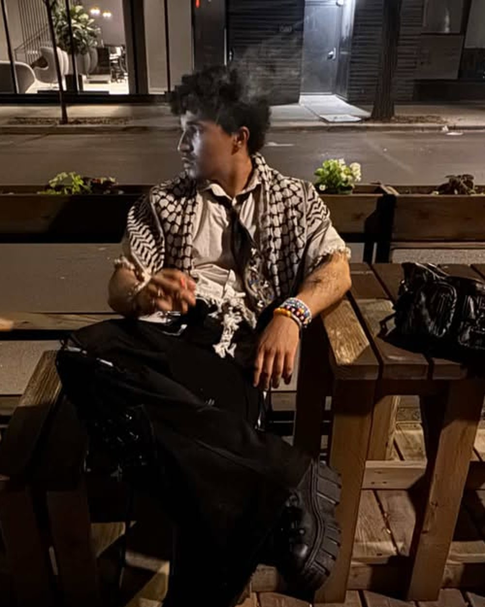
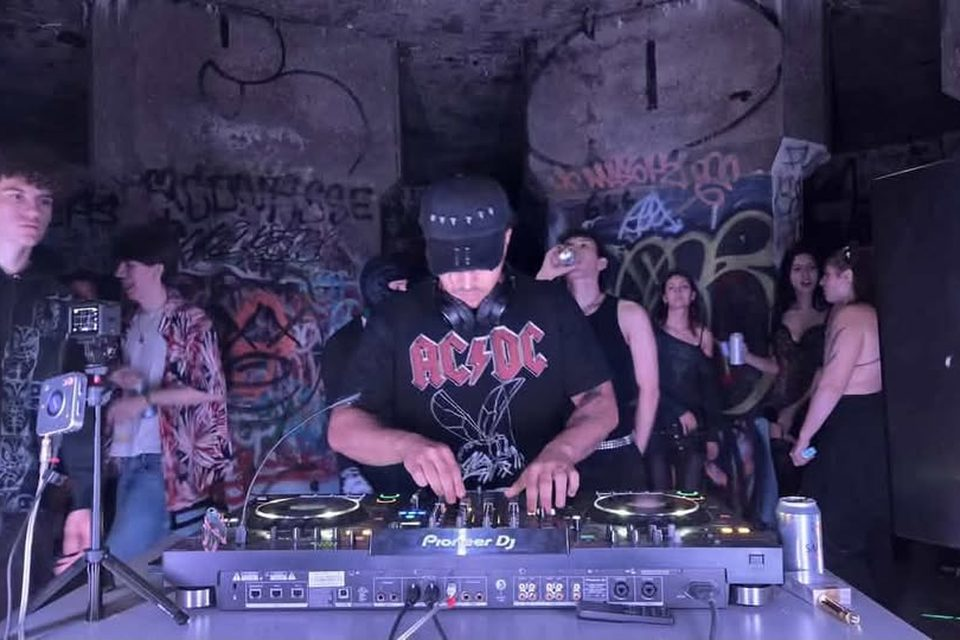

DJ · Montréal
Azathø
Azathø navigue entre la puissance brute de la hard techno et l’énergie hypnotique du groove. Ses sets enchaînent rythmes percutants, basses lourdes et transitions rapides, avec une seule intention : créer de l’énergie et garder le plancher en mouvement.

À écouter